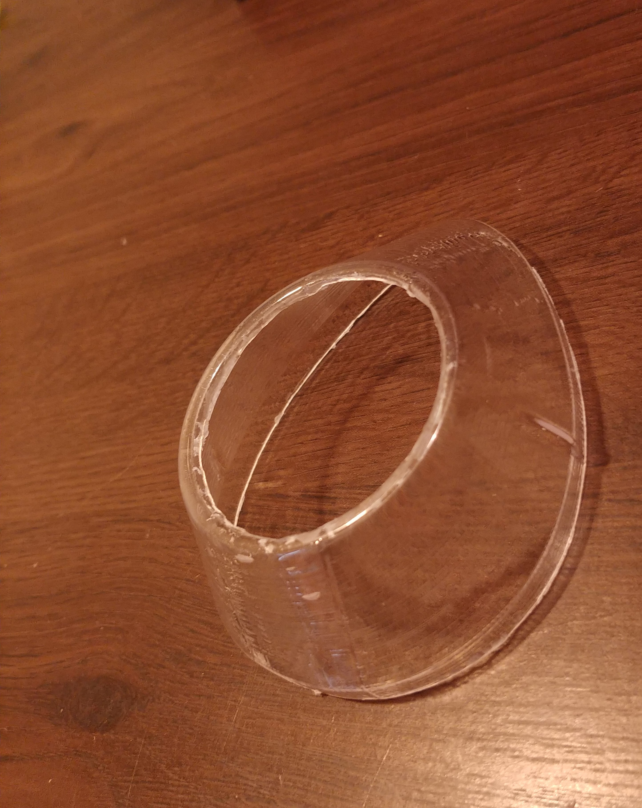
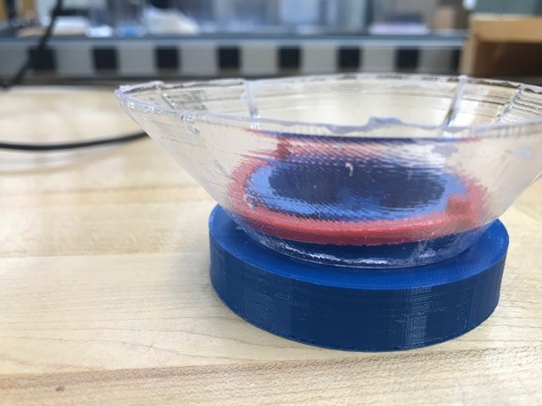
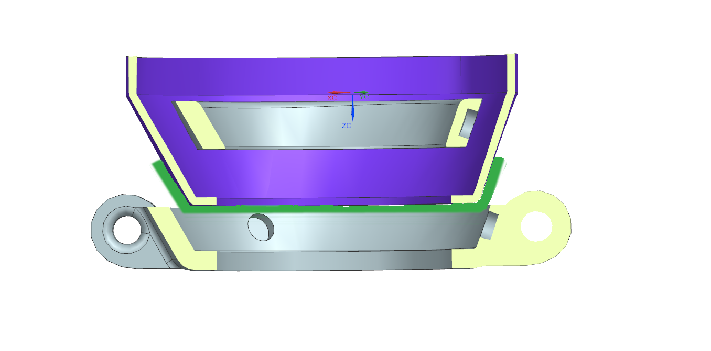

In my Solids and Materials Lab course, my team designed a filter cartridge for a Covid-19 mask.
The goal was to help doctors in developing (and developed) nations cope with the mask shortage. The mask had to be cheap and easy to manufacture, ergonomic, able to withstand the specified cleaning processes, and reasonably airtight.

Our professor supplied a thermoformed shell he had created. He and several other professors had also designed a silicone mold that produced a comfortable, airtight seal around the face.

He had originally tried to mount a cartridge to the mask using 3D printed threads and a gasket, but the threads were difficult to print and the seal was poor. Our task was to find another way to mount a cartridge to the thermoformed surface.
We solved this with magnets embedded in both parts. The attraction between the inner and outer 3D printed parts was more than strong enough to hold the mask together when not in use, and when it was worn, the strap mounting points secured everything further. We chose magnets because they let the mask be taken apart easily for cleaning and minimized the number of critical seals.

The original design had one critical seal between the 3D printed part and the thermoformed shell, and another at the filter membrane. Our design combined them by placing the filter between the outer 3D printed part and the thermoformed shell. When the mask is worn, the 3D printed part presses against the filter membrane, sealing it against the shell. We placed the strap mounting points carefully so that strap tension reinforces the filter seal while also sealing the silicone cushion against the user's face.

The first prototype printed easily and revealed a few small improvements. The thermoformed shell had changed from its CAD model, so the fit needed adjusting, and the two strap mounts needed to become four.
The class was still in progress at the time of writing, so the mask was not yet complete. The part files had been submitted and were to be tested as soon as they printed.